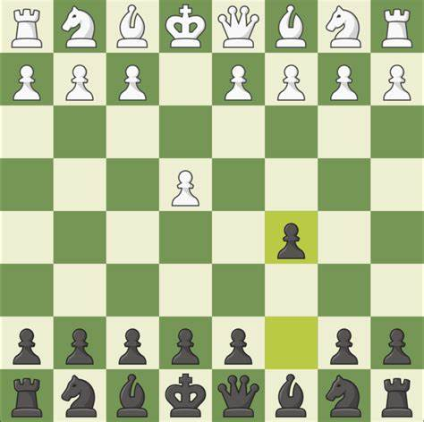

First opening to learn
The Sicilian Defense
Like previously mentioned the most common opening chess move is e4 from white. Typically black responds with e5, grbbing space in the center and stopping white from gaining complete control in the center. However another option black has is to play c5. This is known as the sicilian defense. It's been around for hundreds of years and been played millions of times. There are many different variations that are mainstream.
White almost always responds with knight f3. This gives black several options including, e6,g6, and d6, along with knightc6, which is what we will be discussing here. White has two popular options which are bishop to b5, or pawn to d4. If white goes pawn to d4 it is known as the open sicilian variation. Blacks takes the d4 pwn with his c5 pawn, and white captures back with the kight.
Whites idea
White in this situation is up one pawn in material and has two peices in the center. Their knight on d4 could be captured by blacks knight, however whites queen would take back and develop a peice in the meantime. White is also ahead here in position as white has more pieces active and is ready to open up the king side to allow them to castle.
Blacks idea
Although black is down in material and positioning, they now have two pawns in the center as appose to whites one pawn. They can use this immeditely with the move pawn to e5, taking space in the center and putting pressure on whites knight. They will then look to develop peices and castle kingside.
This is a very sharp position which has many ideas for both sides. These are just a couple of the things each side is looking for.